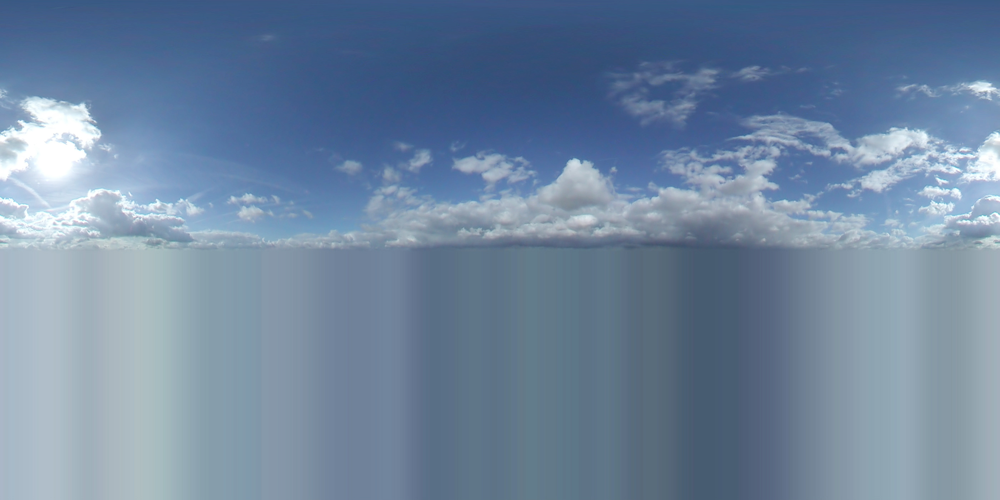

Title
- 1. Notice that the Temple of Athena Nike is located at the edge of a very high cliff.
- 2. Although this position is highly susceptible to attacks, it is also placed well in order to strengthen the defense around the Acropolis. As a result, the location of this temple is also very suitable for worshiping the goddess of victory, Athena.
- 3. The location of the Athena Nike is also significant in that even before the temple was constructed, archaeological evidence shows that the location was already utilized during the Mycenaean age, to conduct religious rituals. At the time, Mycenaeans has also built the first defensive bastion at this location, the remaining fragments of which are preserved in the temple’s basement.
